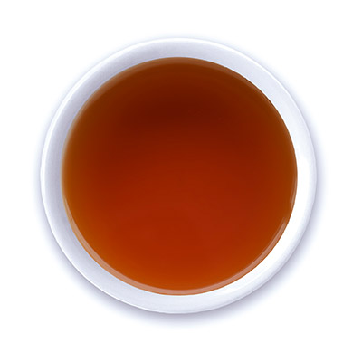
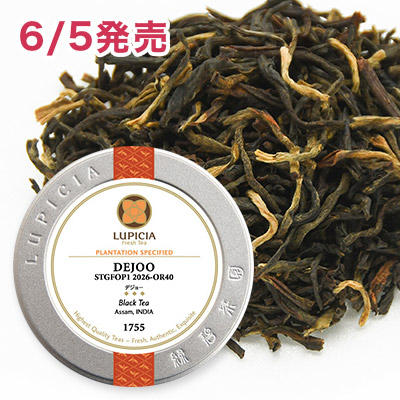

LUPICIA 1755 · g13101755
데주 STGFOP1 2026-OR40
デジョー, 2026-OR40
DEJOO, STGFOP1 2026-OR40
수량한정밀크티 추천


春摘みの魅力を堪能する
軽やかなコクとすっきりとした甘みのアッサム春摘み紅茶はぜひストレートで。少量のミルクとの相性も抜群です。
【お茶の説明】
アッサムの中でも名高い人気茶園の一つ、デジョー茶園による、生き生きとした風味が魅力の春摘み紅茶です。 ストレートでも渋みが少なく、蜜を思わせる甘い香りとアッサムならではのすっきりとしたコクを伴ったバランスの良い味わいは春摘みならではです。少量のミルクを加えると華やかな香りが際立ち、やさしい飲み口のミルクティーをお楽しみいただけます。
【茶園情報】
インド北東部アッサムの大平原を流れるブラマプトラ河の北岸に位置し、北はアルナーチャル プラデーシュ州の丘陵に囲まれたデジョー茶園は、美しい自然と景観に囲まれた茶園です。
茶園名の由来には諸説ありますが、現地語で川を意味する「DI」と、この土地の部族が醸造した米酒に付けられた「ZOO」を合わせて付けられたという説があります。
熱帯気候と適度な降雨量がある環境で育まれた、豊かな個性を持つ高品質なデジョー茶園のお茶は、アッサムの中でも高い評価を集めています。
また、茶園内と周囲の水域と自然林を保護することにより、長年にわたり生態学的バランスを維持するために尽力。その努力が実り、茶園は野生生物の楽園となっています。
- 상품번호
- 1755
- 상품 형태
- 50g 캔입
- 가격
- 1,530円 【매진사례】
- 판매 안내
- ※수량・기간한정
※상미기한：제조일로부터2년 - 원재료
- 紅茶※商品の改定などにより、商品パッケージの記載内容が上記内容と一部異なる場合がございます。
- 원산지
- インド・アッサム※商品の改定などにより、商品パッケージの記載内容が上記内容と一部異なる場合がございます。
- 찻잎
- 2.5-3g
- 물
- 熱湯
- 우림 시간
- 2.5-3分
- 우림 횟수
- 1-2回
다른 포장
보관된 상품 정보 갱신일: 2026-11-22